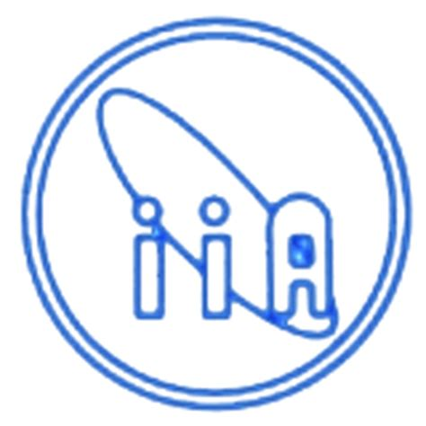

-
Independent programmer and coach, Self
employed - August 2019 to
-
Worked on building integration for OpenProject and Mattermost
- Coached students on Python
programming, computer science and information technology (November 2019 to March 2021, completed)
Software used -
- Programming Languages - JavaScript ES6, Python
- Frameworks and Libraries - Node.js, Express, Flask
- IDE and tools - VS Codium, Android SDK, Postman, Firefox developer tools, Docker
- Operating system - GNU/Linux (Trisquel 8.0)
-
(later acquired by Cisco), Software Developer - January 2019 to July 2019
Developed microservices for Cisco WebEx
Teams.
My day-to-day activities included -
- Pairing with other developers in fixing bugs, understanding code and suggest possible ways
of
arriving at a solution
- Understand user stories and estimate
completion date
- Coding and writing integration
tests for a user story
- Writing RESTFul
microservices to support CRUD operations
Problems I solved were -
Overall impact on product -
- Reduced defects
- Better performing software
Software used -
- Programming Languages - JavaScript ES6, Java 8
- Frameworks and Libraries - Spring Boot
- Database - Postgres
- IDE and tools - IntelliJ Idea, VS Code, Postman, Docker
- Operating system - Mac OS X
-
 Project Engineer - I (Software) - December 2017 to December 2018
Member of the India Thirty Meter Telescope (TMT) Software work package team co-ordinating the test
and integration of the software delivered by the vendor, carry out quality checks, participate in
meetings
with the vendors and TMT Project Office.
Contributions -
- Used IntelliJ IDE with Java on GNU/Linux platform to test and debug code for the observatory
software.
- Used Jira for reviewing user stories
- Worked with automation of test suite using a shell script on GNU/Linux to generate test reports
- Fixed bugs through Git pull request
for
the search indexing in documentation
- Created trade-study like document for capturing the user interface tool choices
Mentions -
Project information-
Software used -
- Programming Languages - Java 8, Scala, Bash shell scripting
- IDE and tools - IntelliJ Idea
- Libraries - Redis, Apache Kafka
- Agile tools - Jira, Confluence, Kanban
- Operating system - GNU/Linux (Ubuntu)
-
Teaching Assistant - August 2017 to December 2017
Contributions -
Software used -
- Programming Languages - C, Bash shell scripting
- IDE and tools - Vim, GDB
- Operating system - GNU/Linux (Fedora)
-
Software Engineer - November 2012 to November 2016
Primary responsibilities -
Key Contributions -
-
Development of reusable JavaScript
modules (Modular JavaScript Design Pattern) for a given
functionality
using AMD (Asynchronous Module Definition) and loading using Require JS to improve web-page
performance
and code maintainability
-
Usage of Underscore JS framework for coding of reusable HTML templates which can be rendered
on
the fly. This helps in avoiding typo errors due to single or double quote mismatch in
JavaScript
code which are hard to debug. It also provides separation of HTML template from JS thus
improving code maintainability
Software used -
- Programming Languages - Java 7, JavaScript
- Frameworks and libraries - Spring MVC, Hibernate ORM, Apache Maven, JUnit, jQuery
- IDE and tools - Eclipse IDE, Microsoft Visio
- Server - JBoss AS 7
- Database - Oracle 10g relational database
- Web Browser - Firefox (with Firebug)
- Operating system - Microsoft Windows 7